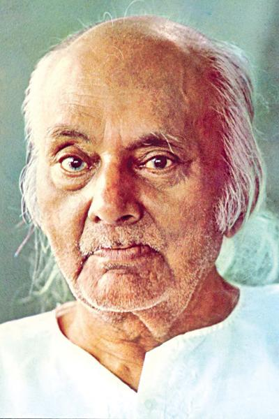

Rebel poet
Kazi Nazrul Islam is the National Poet Of Bangladesh. He is the Rebel Poet of the undivided
Bengal. He came from a low-income family in the village of Churulia in the Asansol
sub-division of the Burdwan district in 1899. He completed his primary education. He served
as a primary school teacher, a late chief, and a soldier. After returning to Kolkata, he
started to write poems. The spirit of freedom in his heart led him to write fiery poems. His
works include Agni Bina, Bisher Banshi, Carbonara, and Sindhu Hindle. His songs were
exciting. He has left invaluable contributions to us. At the same time, he was a poet,
singer, musician, novelist, and story writer. He died on the 29th of August 1976. We pray
for him.
Awesome writer
Nazrul's writings explored themes such as freedom, humanity, love, and revolution. He
opposed all forms of bigotry and fundamentalism, including religious, caste-based and
gender-based.Nazrul wrote short stories, novels, and essays but is best known for his
songs and poems. He introduced the ghazal songs in Bengali language and is
also known for his extensive use of Arabic, Persian and Urdu words in his works.
Nazrul wrote and composed music for nearly 4,000 songs (many recorded on HMV and gramophone
records),collectively known as Nazrul Gīti.
